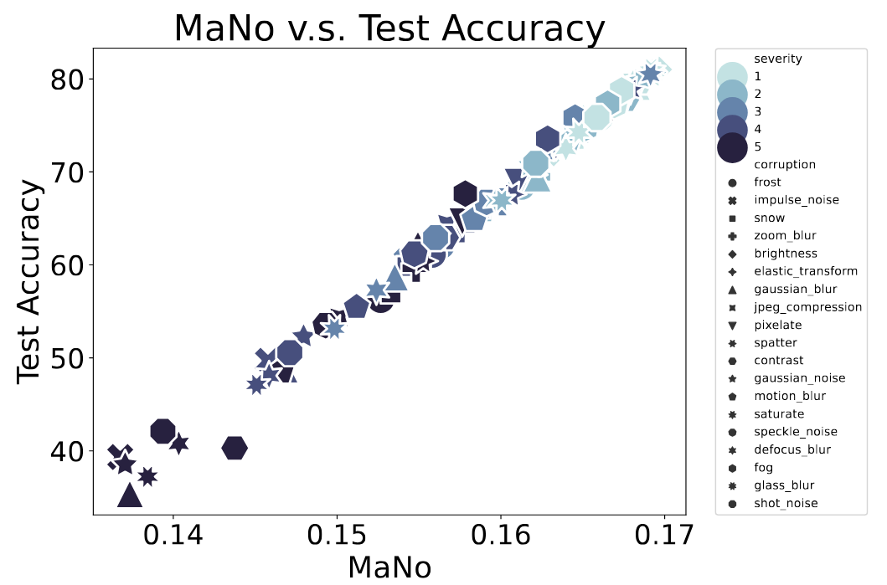
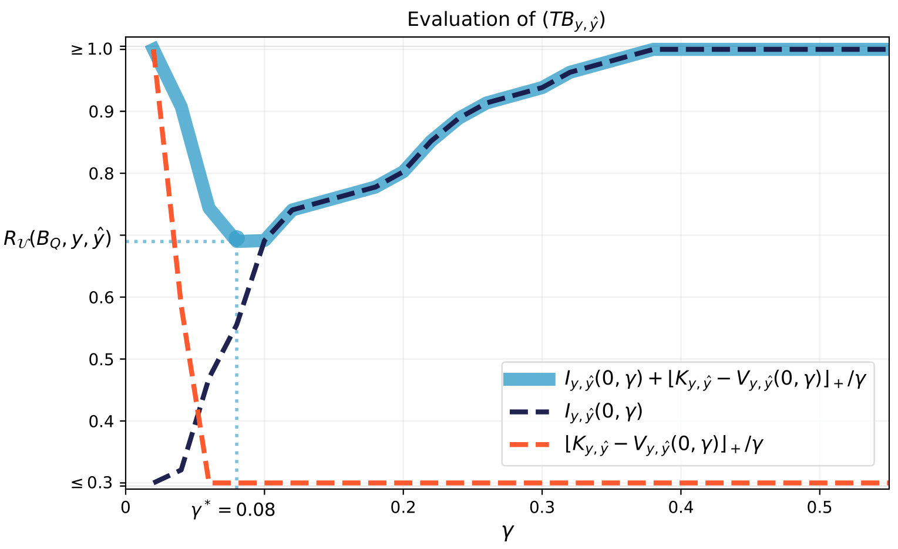
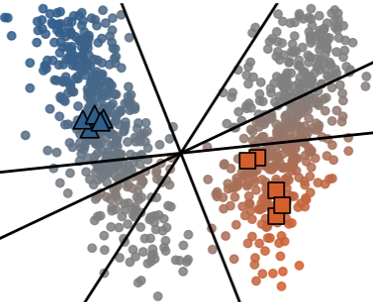

Publications
The list of publications from members of the team can be found below (*equal contribution).

|
Romain Ilbert*, Vasilii Feofanov*, Malik Tiomoko, Themis Palpanas, Ievgen Redko Preprint. arXiv / |
|  |
Renchunzi Xie*, Ambroise Odonnat*, Vasilii Feofanov*, Weijian Deng, Jianfeng Zhang, Bo An NeurIPS 2024. arXiv / |

|
Romain Ilbert*, Ambroise Odonnat*, Vasilii Feofanov, Aladin Virmaux, Giuseppe Paolo, Themis Palpanas, Ievgen Redko ICML 2024 - Oral (top 5%). Also presented at CAp 2024 (oral). arXiv / OpenReview / code |
|  |
Vasilii Feofanov, Emilie Devijver, Massih-Reza Amini JMLR. Also presented at ICML 2024 (poster). Paper / Poster |
|  |
Ambroise Odonnat, Vasilii Feofanov, Ievgen Redko AISTATS 2024. Also presented at CAp 2024 (long oral). arXiv / PMLR / code |